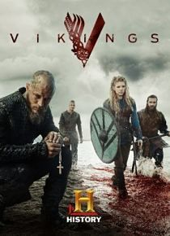
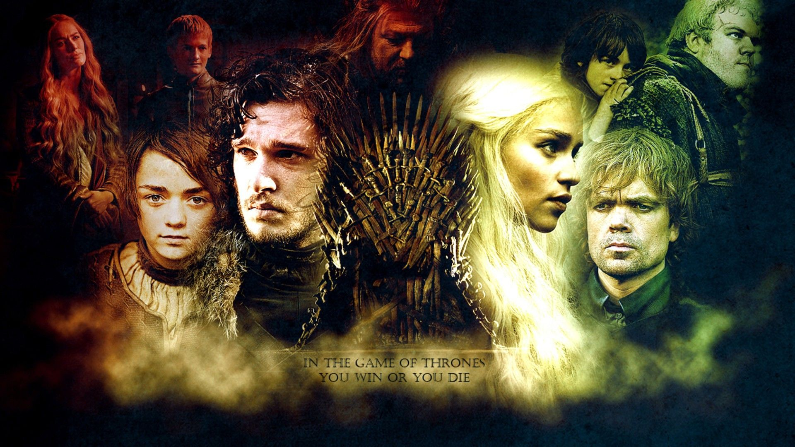
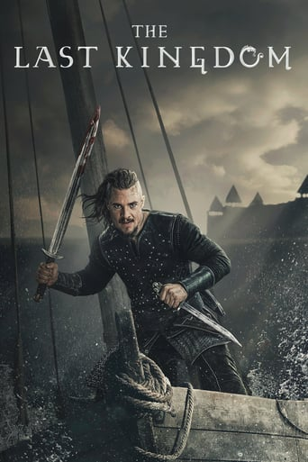
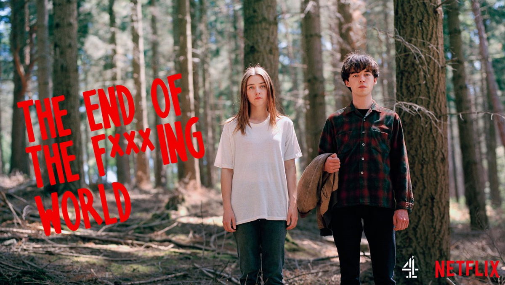
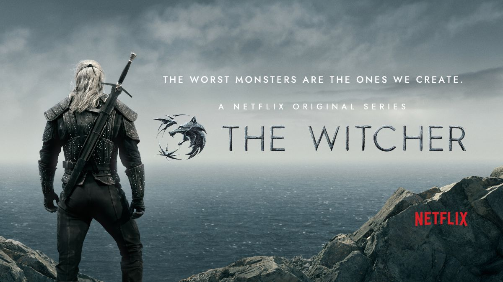

Este es un listado de series recomendadas por Tatiana Peña, son series que permiten aprender de diferentes formas en especial de historia como lo son vikings y the last kingdom, series basadas en crónicas e historias de la vida real (historias sobre cristianismo y paganismo); otras de esta series son series que permiten reconocer un poco mas como vemos la vida desde diferentes puntos de vista.
|  |  |  |
|
|
 |  |
¡Elige sabiamente por donde empezar!
Karen Tatiana Peña Cortes.